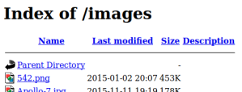
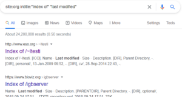

Review Unreferenced Files for Sensitive Information
Review Unreferenced
Files for Sensitive InformationOWASP OTG-CONFIG-004:
https://wiki.owasp.org/index.php/Review_Old,_Backup_and_Unreferenced_Files_for_Sensitive_Information_(OTG-CONFIG-004)While
most of the files within a web server are directly handled by the server itself, it isn’t uncommon to find
unreferenced or forgotten files that can be used to obtain important information about the infrastructure or the
credentials
Common types of information leakage:
◇
Valid users
◇ The type of SQL database in use
◇ Database schema
◇ Underlying directory
structure
◇ OS and service versions
◇ Logs
◇ Configuration Files
▪
Joomla stores the configuration file in the application root folder with
the name configuration.php.
This file in itself is not viewable because it has the .php extension, but we
should look for backup alternatives (configuration.php.bak, configuration.php.old,…).
◇
…
Leakage Flaws•
Directory
browsing is a common information leakage flaw.
Enables the attacker to "break out" of the
web server and surf the underlying filesystem
To do that see the sub-chapter
Directory
Listing misconfiguration  ◇
Google Dorks(
https://www.exploit-db.com/google-hacking-database):
▪ site:org intitle:"Index of" "last modified"
 ◇ Automated Discovery of Directory Browsing
▪ Tools automatically
discover directory browsing flaws:
- Nikto
- w3af
- ZAP's forced browse functionality
-
Metasploit's WMAP
- msfcrawler auxiliary module
▪ Wordlists that we can use for any fuzzing
tool
- SecLists:
https://github.com/danielmiessler/SecLists - DIRB:
https://github.com/v0re/dirb/tree/master/wordlists
- DirBuster:
https://github.com/KajanM/DirBuster - FuzzDB:
https://github.com/fuzzdb-project/fuzzdb/tree/master/discovery
- JBroFuzz:
https://github.com/twilsonb/jbrofuzz/blob/master/tar/fuzzers.jbrf
- WMAP:
https://github.com/rapid7/metasploit-framework/tree/master/data/wmap•
search for CVEs(
http://cve.mitre.org/cve/search_cve_list.html)
◇
use word "leakage"